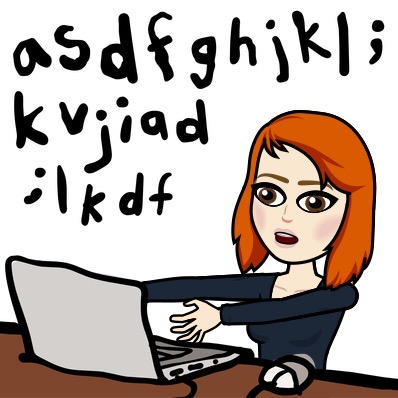
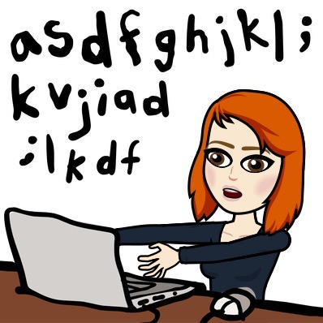
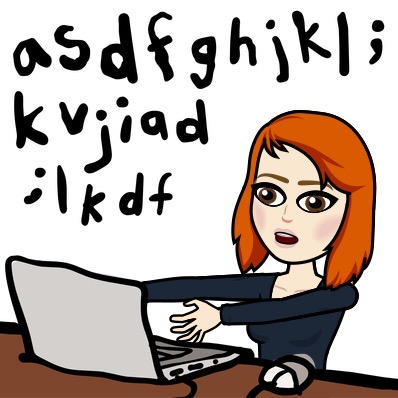

Hi, I'm Kathryn!
Currently studying an MSc in Cyber Security. I like webby things but I'm particularly interested in Bluetooth Low Energy and how insecure it is - you can read about it on my blog which can be found
here!
 
